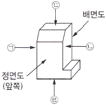
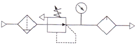
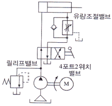

설비보전기능사 (2014-01-26 기출문제)
1과목: 기계보전 일반(대략구분)
1. 그림 중 ㉠~㉣의 괄호에 들어갈 투상도의 명칭이 바르게 구성된 것은?

- ㉠ 우측면도 ㉡ 좌측면도 ㉢ 저면도 ㉣ 평면도
- ㉠ 우측면도 ㉡ 좌측면도 ㉢ 평면도 ㉣ 저면도
- ㉠ 좌측면도 ㉡ 우측면도 ㉢ 저면도 ㉣ 평면도
- ㉠ 좌측면도 ㉡ 우측면도 ㉢ 평면도 ㉣ 저면도
(정답률: 91%)

2. 금속과 반응해서 저융점 물질을 형성하여 금속 표면의 요철을 고르게 하고 미끄러지기 쉽게 하는 물질로서 그리스에 첨가하는 첨가제로 옳은 것은?
- 극압제
- 유동점 강하제
- 부식 방지제
- 점도지수 향상제
(정답률: 58%)
3. 송풍기에서 베어링의 온도가 급상승 하는 경우 점검하여야할 사항으로 거리가 먼 것은?
- 윤활유의 적정 여부를 점검한다.
- 송풍기의 회전 방향을 점검한다.
- 미끄럼 베어링은 오일 링의 회전이 정상인가 점검한다.
- 관통부에 펠트(Felt)가 쓰이는 경우 이것이 축에 강하게 접촉되어 있지 않은지 점검한다.
(정답률: 73%)
4. 설비 고장률 곡선에서 유효수명기간으로 설비 보전원의 감지능력 향상을 위한 교육훈련이 필요한 시기는?
- 초기고장기
- 보전고장기
- 마모고장기
- 우발고장기
(정답률: 55%)
5. 용접기호의 표시법 중 보조기호 에 대한 것으로 옳은 것은?
- 현장 용접
- 전체 둘레 용접
- 연속 필렛 용접
- 전체 필렛 용접
(정답률: 93%)
6. 윤활유가 산화되었을 때 나타나는 현상과 거리가 먼 것은?
- 점도의 증가
- 증축합물 생성
- 표면장력의 저하
- 다량의 잔류탄소 발생
(정답률: 67%)
7. 종합적 생산보전(TPM)의 활동에 관한 내용으로 가장 거리가먼 것은?
- 작업자의 자주보전체제의 확립
- 설비의 효율화를 위한 개선 활동
- 최고경영자만의 확고한 사업관리 의지
- 보전부문이 효율적 활동을 할 수 있도록 계획보전 체제의 확립
(정답률: 85%)
8. 내장된 전자코일에 의해 발생된 전자력으로 회전력을 전달하는 클러치는?
- 밴드 클러치
- 마찰 클러치
- 전자 클러치
- 맞물림 클러치
(정답률: 92%)
9. 마찰면이 기름 속에 잠겨서 윤활하는 급유법은?
- 원심 급유법
- 롤러 급유법
- 나사 급유법
- 유욕 급유법
(정답률: 91%)
10. 정비용 공기구 중 체결용 공기구가 아닌 것은?
- L-렌치
- 양구 스패너
- 기어 풀러
- 타격 스패너
(정답률: 80%)
11. 다음 중 이물림 축형 감속기에 속하는 것은?
- 웜기어
- 스퍼기어
- 헬리컬기어
- 스파이럴 베벨기어
(정답률: 74%)
12. 기어 이의 접촉 표면에 가는 균열이 생겨 접촉면의 일부가 떨어져 나가는 현상은?
- 피팅(Pitting)
- 리프팅(Lifting)
- 스코어링(Scoring)
- 백래시(Back Lash)
(정답률: 64%)
13. 열에 의한 관의 팽창 수축을 허용하고 축 방향으로 과도한응력이 걸리지 않게 하기 위해 신축이 가능한 이음쇠는?
- 신축 이음쇠
- 주철관 이음쇠
- 나사형 이음쇠
- 유니온 이음쇠
(정답률: 85%)
14. CAD에 관한 설명으로 옳지 않은 것은?
- CAD는 Computer Automatic Design의 약어이다.
- CAD는 시스템을 활용하는 방식은 중앙통제형, 분산처리형, 독립형 등이 있다.
- CAD는 기계, 전기전자, 건축토목, 산업디자인 등의 다양한 분야에 사용된다.
- CAD는 설계의 표준화, 출력의 다양성, 품질 및 생산의향상 등의 특성을 갖는다.
(정답률: 77%)
15. 오링(O-ring)의 구비조건으로 옳지 않은 것은?
- 내 노화성이 좋을 것
- 기계적 성질이 좋을 것
- 사용 온도 범위가 넓을 것
- 탄성이 강하고 변형이 쉬울 것
(정답률: 77%)
16. 나사의 도시법으로 옳지 않은 것은?
- 수나사와 암나사의 골지름은 가는 실선으로 그린다.
- 수나사 바깥지름과 암나사의 안지름은 굵은 실선으로 그린다.
- 완전 나사부와 불안전 나사부의 경계선은 가는 실선으로그린다.
- 암나사의 드릴 구멍의 끝 부분은 굵은 실선으로 120°되게 긋는다.
(정답률: 49%)
17. 보전용 재료에서 접착제의 구비조건으로 옳지 않은 것은?(오류 신고가 접수된 문제입니다. 반드시 정답과 해설을 확인하시기 바랍니다.)
- 액체성일 것
- 도포 후 화학반응이 없을 것
- 틈새에 침투하여 모세관 작용을 할 것
- 도포 후 고체화되어 일정한 강도를 가질 것
(정답률: 61%)
18. 전동기는 일상점검, 정기점검, 연간점검 등으로 구분하여점검하는 것이 좋다. 다음 중 일상점검 항목으로 보기 어려운 것은?
- 축받이의 온도
- 축받이의 마모검사
- 전류계의 지시값
- 전동기 회전음 점검
(정답률: 75%)
19. 취급액에 의한 펌프의 분류 중 얕은 우물용, 깊은 우물용이 해당되는 것은?
- 엔진펌프
- 오수용 펌프
- 청수용 펌프
- 워싱톤 펌프
(정답률: 60%)
20. 다음 중 백래시(Back Lash)가 현저하게 감소되는 나사는?
- 볼 나사
- 미터 나사
- 톱니 나사
- 휘트원드 나사
(정답률: 76%)
2과목: 설비관리(대략구분)
21. 체결용 기계요소 중 와셔(Washer)의 용도로 옳지 않은 것은?
- 너트의 풀림을 방지할 때
- 볼트 지름보다 구멍이 작을 때
- 너트의 자리 면이 고르지 못할 때
- 자리면의 재료가 너무 연하여 볼트의 체결압력을 견딜 수 없을 때
(정답률: 64%)
22. 베어링의 장착을 열박음으로 할 때 베어링의 가열온도로 가장 적절한 것은?
- 50℃
- 100℃
- 130℃
- 170℃
(정답률: 75%)
23. 단면도에서 복잡한 도형의 내부 형상을 분명히 하기 위하여 단면부분을 엷게 색칠하게 표시한 것은?
- 커팅(Cutting)
- 해칭(Hatching)
- 툴링(Tooling)
- 스머징(Smudging)
(정답률: 69%)
24. 볼트의 고착방지법으로 옳지 않은 것은?
- 유성페인트를 칠한다.
- 볼트에 커버를 덮는다.
- 나사의 틈새에 부식성 물질 침투를 방지한다.
- 산화 연분을 기계유로 반한 적색 페인트를 도포한다.
(정답률: 54%)
25. 보전이 규정된 절차와 주어진 자원을 가지고 행하여 질 때, 어떤 부품이나 시스템이 어떤 주어진 시간 이내에서 지정된상태를 유지 또는 회복할 수 있는 확률을 무엇이라고 하는가?
- 보전도
- 신뢰도
- 조업도
- 유용도
(정답률: 81%)
26. 설비의 물리적 성질과 메커니즘(Mechanism)을 이해하여 만성화된 설비나 시스템의 불합리 현상을 원리 및 원칙에 따라 해석하여 현상을 밝히는 기법은?
- PM분석
- FMEA
- FTA
- QM분석
(정답률: 83%)
27. 품질개선활동으로 사용하는 방법이 아닌 것은?
- 파레토차트(Pareto Chart)
- 간트차트(Gantt Chart)
- 관리도(Control Chart)
- 특성요인도(Cause and Effect Diagram)
(정답률: 64%)
28. 공구관리의 기능은 크게 공구의 계획단계와 공구의 보전단계로 구분할 수 있다. 다음 중 공구의 계획단계에 해당되지 않는 것은?
- 공구의 보관ㆍ대출
- 공구의 연구ㆍ시험
- 공구의 설계ㆍ표준화
- 공구의 사용 조건 관리
(정답률: 58%)
29. 버텀-업(Bottom-up)으로 전 종업원이 참가하여 활동을 일체화하고 동기부여로 현장 설비에 대한 자주보전을 통하여 설비 종합효율 향상을 추진하는 활동은?
- 벤치마킹
- 위험예지훈련
- 무재해 운동
- TPM 분임조
(정답률: 75%)
30. 설비관리 조직에 있어서 기획, 설계, 건설, 보전, 수리 등과같이 복잡하고 정밀한 업무에 효율적으로 대처하기 위해 구분되는 조직은?
- 전문기술별 조직
- 대상별 조직
- 혼합별 조직
- 기능별 조직
(정답률: 59%)
3과목: 공유압 일반(대략구분)
31. 설비관리의 의의에 대한 설명 중 가장 거리가 먼 것은?
- 보전도 유지를 포함한 생산보전 활동
- 설계와 연계되는 보전도 향상
- 설비 자산의 효율적 관리
- 설비에 대한 요구변화 관리
(정답률: 59%)
32. FMECA는 시스템의 잠재적 결함을 조직적으로 조사하는 설계기법의 하나로 설비에 대한 평가와 개선을 실시할 수 있는 방법이다. 이 기법에서 산출되는 위험 우선수(RPN) 값에 포함되지 않는 것은?
- 치명등급
- 로스등급
- 발생등급
- 발견확률
(정답률: 52%)
33. 설비의 형태적 분류 항목에 속하지 않는 것은?
- 토지
- 기계 및 장치
- 연구개발 설비
- 건물
(정답률: 64%)
34. 설비효율을 저해하는 6대 로스 중 시간 가동률에 제일 큰 영향을 주는 로스는?
- 고장 로스
- 일시 정체 로스
- 초기 로스
- 속도 저하 로스
(정답률: 76%)
35. 공사 관리의 목적을 가장 잘 설명한 것은?
- 설비에 투입되는 비용을 최소화
- 공사를 실시하는 작업자에 대한 요구 관리
- 공사수행 상 필요한 제약조건 관리
- 공사사양과 요구되는 사무절차 관리
(정답률: 72%)
36. 계측화의 방식을 설명한 것은?
- 기업의 목적을 명확히 확립할 것
- 기업을 과학적ㆍ합리적으로 관리 운영하는 방침을 수립할 것
- 계측관리에 대해서 공정을 객관적으로 명기하도록 공정도를 작성할 것
- 정보 검출부로서 계측기를 정비하고, 계측관리의 체계를확립할 것
(정답률: 58%)
37. 전원참가라는 기본사고를 운전설비에 적용하여 운전자(또는 생산 작업자) 스스로 전개하는 보전활동의 정의로 맞는 것은?
- 계획보전
- 보전예방
- 상태기준보전
- 자주보전
(정답률: 77%)
38. 현장 작업자가 작업의 자기관리에 이용하는 계측기로서사용이 간편하고 섬세하지 않은 것으로, 될 수 있는 한직관적으로 이용하기 쉽도록 장치하는 계장은?
- 현장 작업용 계장
- 관리 작업용 계장
- 시험 연구용 계장
- 제작 공업에 있어서의 계장
(정답률: 81%)
39. 설비 보전의 직접적인 기능이 아닌 것은?
- 설비정비
- 설비검사
- 설비배치계획
- 설비수리
(정답률: 76%)
40. 체크밸브 또는 릴리프 밸브 등 밸브의 입구측 압력이상승하여 밸브가 열리기 시작하여 어떤 일정한 흐름의 양으로 안정되는 압력은?
- 최초압력
- 서지압력
- 크래킹압력
- 리스트압력
(정답률: 46%)
41. 공압 베인형 요동 액추에이터의 종류 중 일반적으로 사용하지 않은 것은?
- 싱글 베인형
- 2중 베인형
- 3중 베인형
- 4중 베인형
(정답률: 60%)
42. 유압 작동유에서 오일과 물의 분리하기 쉬운 정도를 나타내는 것은?
- 소포성
- 방청성
- 항유화성
- 산화안정성
(정답률: 58%)
43. 유압 요동모터 중 피스톤형 요동모터의 종류가 아닌 것은?
- 피스톤 체인형
- 래크 피니언형
- 피스톤 링크형
- 피스톤 케이블형
(정답률: 40%)
44. 기어펌프의 측판에 도출 홈을 설치하는 이유는?
- 토출측 압력을 높이기 위해서
- 흡입측 압력을 높이기 위해서
- 펌프의 폐입현상을 방지하기 위해서
- 펌프의 스팀록 현상을 방지하기 위해서
(정답률: 65%)
45. 공기압 회로 내의 공기압력에 따라 다른 회로의 작동 순서를 제어하는 밸브는
- 시퀀스 밸브
- 안전 밸브
- 압력 스위치
- 신호감지 밸브
(정답률: 76%)
46. 유압 시스템의 수정회로 설계 중 보수관리를 고려한 회로에 해당되지 않은 것은?
- 가속회로
- 작동유 점검을 위한 회로
- 플러싱 회로
- 기능점검을 고려한 회로
(정답률: 56%)
47. 면적을 감소시킨 통로로서 길이가 단면 치수에 비하여 비교적 짧은 경우의 유통 교축부는?
- 초크(Choke)
- 플런져(Plunger)
- 스풀(Spool)
- 오리피스(Orifice)
(정답률: 58%)
48. 물체가 상태변화를 할 때 에너지의 전체량이 변화 없이 일정하게 유지되는 것을 무엇이라 하는가?
- 보일의 법칙
- 파스칼의 원리
- 연속의 법칙
- 에너지 보존의 법칙
(정답률: 70%)
49. 유압실린더에 작용하는 힘을 산출할 때 사용되는 것은?
- 옴의 법칙
- 파스칼의 원리
- 가속도의 법칙
- 플레밍의 왼손법칙
(정답률: 81%)
50. 다음 그림의 기호가 나타내는 것은?

- OR 밸브
- 서비스 유닛
- AND 밸브
- 시퀀스 밸브
(정답률: 63%)
4과목: 산업안전(대략구분)
51. 공기압 발생장치 중 1kgf/cm2 이상의 압력을 발생시키는 장치는?
- 팬
- 공기필터
- 송풍기
- 공기압축기
(정답률: 71%)
52. 그림에 해당되는 제어 방법으로 옳은 것은?

- 미터 인 방식의 전진행정 제어회로
- 미터 인 방식의 후진행정 제어회로
- 미터 아웃 방식의 전진행정 제어회로
- 미터 아웃 방식의 후진행정 제어회로
(정답률: 61%)
53. 어큐뮬레이터(축압기)의 사용 목적이 아닌 것은?
- 에너지의 축적
- 유체의 누설 방지
- 유체의 맥동 감쇠
- 충격 압력의 흡수
(정답률: 58%)
54. 다음 중 A급 화재에 해당되는 것은?
- 금속물질의 화재
- 고체 연료의 화재
- 전기 장치의 화재
- 유지류, 알코올, 석유 제품에 의한 화재
(정답률: 56%)
55. 전단기의 근원적 안전화를 위한 기본적 대책으로 가장 거리가 먼 것은?
- 금형에 방호 울타리를 설치할 필요가 없다.
- 위험 한계 내에 신체의 일부가 들어가지 않도록 한다.
- 위험을 방지하기 위한 기구를 갖는 프레스를 이용한다.
- 방호장치를 프레스 본체의 설계시부터 고려하여 만든다
(정답률: 80%)
56. 회전 중인 숫돌의 위험방지를 위한 가장 적절한 안전장치는?
- 덮개를 설치한다.
- 집진장치를 한다.
- 급정지 장치를 한다.
- 기동스위치에 시건장치를 한다.
(정답률: 73%)
57. 다음 중 작업복 선정시 유의사항으로 옳지 않은 것은?
- 작업복이 몸에 맞고 동작이 편해야 한다.
- 작업에 지장이 없는 한 손발이 많이 노출되는 것이 좋다
- 착용자의 연령, 성별 등을 감안하여 적절한 스타일을선정한다.
- 바지 자락 또는 단추가 기계에 말려 들어갈 위험이 없도록 한다.
(정답률: 77%)
58. 금속의 용접ㆍ용단 또는 가열에 사용되는 가스 등의 용기 취급 시 유의사항으로 틀린 것은?
- 전도의 위험이 없도록 한다.
- 충격이 가하지 않도록 한다.
- 밸브의 개폐는 서서히 한다.
- 용해 아세틸렌 용기는 눕혀 놓는다.
(정답률: 83%)
59. 산업 현장에서 분류하는 상해의 종류가 아닌 것은?
- 골절
- 추락
- 동상
- 타박상
(정답률: 53%)
60. 작업장의 통로에 관한사항 중 부적합한 것은?
- 통로의 주요한 부분에는 통로 표시를 하여야 한다.
- 통로면으로 부터 높이 2m 이내에는 장애물이 없도록 하여야 한다.
- 통로내의 물건은 통로 한쪽으로 쌓아 놓고 조명시설을설치을 하여야 한다.
- 작업장 내에는 안전한 통로를 설치하고 안전하게 통행할수 있도록 해야 한다.
(정답률: 77%)
㉠은 물체의 좌측면을 보여주는 투상도이므로 좌측면도가 맞습니다.
㉡은 물체의 우측면을 보여주는 투상도이므로 우측면도가 맞습니다.
㉢은 물체의 위나 아래를 보여주는 투상도이므로 저면도가 맞습니다.
㉣은 물체의 앞쪽을 보여주는 투상도이므로 평면도가 맞습니다.